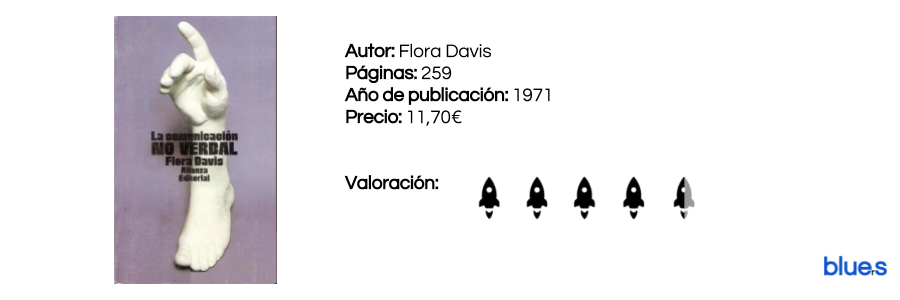

El libro negro del emprendedor
by Luis Morales
Publicado 12/03/2017

"El 95% de los emprendedores fracasan antes del quinto año, y solo el 0,02% de los textos de empresa se dedican a analizar por qué"
Lo primero que nos gustaría comentar y agradecer a Fernando Trías es su buena pluma. Es un libro muy entretenido de leer, seas o no emprendedor, es un ensayo que puede hacer interesante una ociosa tarde de domingo.
Entrando en materia, decir que cuando afrontamos el prólogo hemos sentido una tremenda emoción al pensar que realmente iba a ser lo que promete "un libro que te cuente lo que otros no hacen" y exponga de manera más o menos realista la gran cantidad de problemas y situaciones difíciles a las que se enfrentan los valerosos paladines del emprendimiento. Muy a nuestro pesar, las páginas que siguen a esta introducción, se van descafeinando paulatinamente, con algún que otro ejemplo magnífico que cumple realmente su propósito, pero no creemos que lo aquí reunido vaya a librar a ningún "no emprendedor" de arruinarse.
La comunicación no verbal
by Luis Morales
Publicado 09/03/2017

Uno de esos imprescindibles que año tras año, como el buen vino, mejora y demuestra su intangible valor. No hay otro libro, a nuestro modo de ver, que mejor explique y aborde la comunicación no verbal.
46 años después seguimos volviendo una y otra vez a esta joya que la buena de Flora Davis quiso regalar al mundo. Una ciencia nueva por esos años, revolucionaria y con la que seríamos capaces de pillar al mentiroso, saber de una vez cuando lanzarnos a dar un beso y cuando callarnos; la cinesis iba a revolucionar el mundo.
Leer másLa fábrica del emprendedor
by Luis Morales
Publicado 05/03/2017

Cuidado, no es un libro sobre emprendimiento, no comentáis nuestro mismo error al ver el título. Es un ensayo político-económico sobre el mercado laboral actual, futuro y sus relaciones con el poder y sistema capitalista.
"Solo siendo capaces de organizarnos, de manera que la cooperación domine a la competencia, podremos empezar a construir la subversión contra el totalitarismo de la empresa-mundo"
Leer másBuscar
Categorías
En estos días, la bibliografía orientada al mundo del emprendimiento parece la gallina de los huevos de oro. Todo el mundo es experto y todas las instituciones creen saber el secreto del éxito.
Este Blog está creado por y para emprendedores, con el firme objetivo de separar la paja del grano y poner sobre la mesa aquellos libros que realmente creemos dignos de ser leídos y aquellas herramientas genuinamente valiosas para el emprendedor.